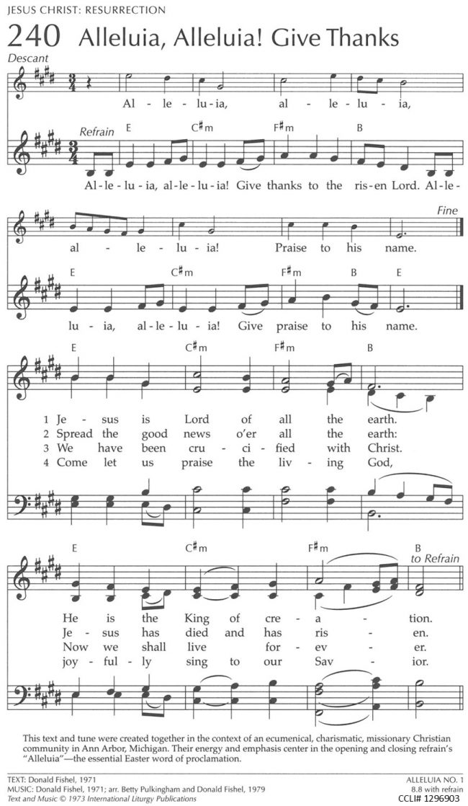

|
|
【哈利路亞！感謝主】 |
|
Chorus: |
哈利路亞，哈利路亞！當感謝我復活主， |
|
https://www.riteseries.org/song/Hymnal1982/370/ https://www.firstpreswh.org/daily-devotional/alleluia-alleluia-give-thanks-hymn-240/
 |
|
|
|
|

世紀頌讚209哈利路亞！感謝主 https://youtu.be/yoEDlUs9X7w -
https://www.riteseries.org/preview/H/H178/H178.Q072.Piano.VH.06.mp3
| Text: | Alleluia, Alleluia! Give Thanks |
| Author: | Donald Fishel |
| Tune: | ALLELUIA NO. 1 |
| Composer: | Donald Fishel |
| Short Name: | Donald Fishel |
| Full Name: | Fishel, Donald E., 1950- |
| Birth Year: |
1950BiographyFishel graduated from the University of Michigan School of Music in 1972. He has played the flute in a number of orchestras, bands, and theaters. In 2008, he moved to Tennessee. |
| Text Information | |
|---|---|
| First Line: | Alleluia, alleluia! Give thanks to the risen Lord |
| Title: | Alleluia, Alleluia! Give Thanks |
| Author: | Donald Fishel |
| Refrain First Line: | Alleluia, Alleluia! |
| Meter: | Irregular |
| Language: | English |
| Publication Date: | 1991 |
| Scripture: | |
| Copyright: | 1973 by The Word of God Music/Servant Music |
| Tune Information | |
|---|---|
| Name: | ALLELUIA NO. 1 |
| Composer: | Donald Fishel |
| Meter: | Irregular |
| Key: | F Major |
| Copyright: | 1973 by The Word of God Music/Servant Music |
History of Hymns:"Alleluia, Alleluia! Give Thanks"
“Alleluia, Alleluia! Give Thanks”
Donald Fishel
UM Hymnal, No. 162
Alleluia, alleluia!
Give thanks to the risen Lord.
Alleluia, alleluia!
Give praise to his name. *
In the years following the Second Vatican Council (1962-1965), Roman Catholic composers contributed many new songs for congregational use in a variety of musical styles. The folk song style of the 1960s and 1970s became very popular because of its fresh sound to parishioners of this era, the accessibility of the guitar and the singability of the tunes, especially for those unaccustomed to singing in the liturgy.
Among the songs of this genre that has stood the test of time is “Alleluia, Alleluia! Give Thanks” by Donald Emry Fishel (b. 1950). Following good folk song practice, the refrain of his tune ALLELUIA NO. 1 is easily learned and memorized after one hearing. The accompaniment and even the key in which the song is written (E Major) are perfect for the folk guitar, though most hymnals also make use of a piano version as well.
Depending on the song’s placement in the liturgy, the stanzas may be sung by the congregation or a soloist. If the song is used as an alleluia processional for the Gospel reading of the day or sung during the distribution of the Eucharist, it may be better for a soloist to sing the stanzas so that the assembly might participate more fully in the ritual action.
Mr. Fishel, a freelance flutist, flute instructor and composer, studied at the University of Michigan School of Music under Nelson Hauenstein and Michael Stoune, graduating in 1972. He has performed in a number of settings including serving as principal flutist with the Dexter Community Orchestra in Dexter, Mich.
According to UM Hymnal editor, the Rev. Carlton Young, Mr. Fishel joined the Word of God, a charismatic Catholic community based in Ann Arbor, Mich., and was the group’s music leader and orchestral conductor from 1969 to 1981. He also served as publications editor for the Word of God and Servant Music from 1973-1981, preparing musical manuscripts and producing recordings.
In 1983 Mr. Fishel studied computer science and became a systems programmer. In 2008 he moved to Nashville, Tenn., where he is again teaching flute after a hiatus of two decades.
“Alleluia No. 1” (1971) was his first song and, in the composer’s words, was written “rather quickly, in about an hour. At first, there were only four verses. I added [an additional verse] while I was preparing for baptism: ‘We have been crucified with Christ; now we shall live forever.’ It seems to me to be a central idea of baptism, and I wanted it to be the center of the song (the third verse of five).”
The text embraces Pauline theology and includes a creedal phrase from the early church, “Jesus is Lord” (1 Corinthians 12:3; Romans 10:9) in stanza one. Stanza two contains the spirit of Matthew 28 following the resurrection of Christ, “Spread the good news o’er all the earth.” Stanza three employs a baptismal reference from Galatians 2:20: “I have been crucified with Christ and I no longer live, but Christ lives in me. The life I now live in the body, I live by faith in the Son of God, who loved me and gave himself for me.” (NIV) The final stanza of the four included in the UM Hymnal is in an invitation to “praise the living Christ.”
Mr. Fishel’s best known and earliest songs, composed during his student days at the university, are “Alleluia No. 1” and “The Light of Christ.” These are widely available in several Christian traditions, and can be found in Episcopal, Lutheran, Methodist and Roman Catholic hymnals.
While the resurrection is a theme of this song, it may be sung throughout the Christian calendar as each Sunday is historically a “little Easter.”
* © 1973 The Word of God, Ann Arbor, Mich. All rights reserved. Used by permission.
Dr. Hawn is distinguished professor of church music at Perkins School of Theology. He is also director of the seminary’s sacred music program.
https://www.umcdiscipleship.org/resources/history-of-hymns-alleluia-alleluia-give-thanks